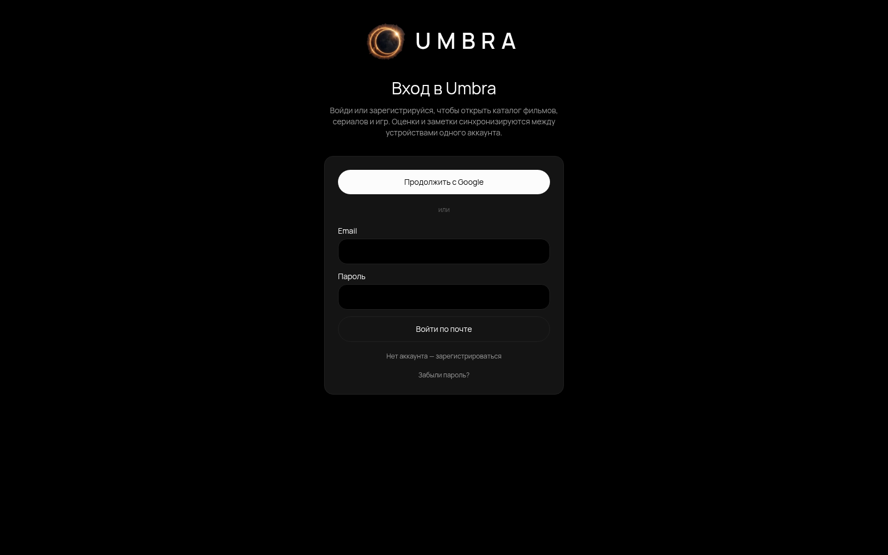

Особиста колекція й синхронізація
Статуси, оцінки, нотатки, JSON-експорт та імпорт. Firestore слухає зміни, включно з видаленнями; правила обмежують доступ власником, а IndexedDB підтримує чергу офлайн-правок.
PWA для особистої колекції фільмів, серіалів та ігор. Збереження, оцінки, нотатки, прогрес перегляду, дані друзів і підбір на вечір — в одному застосунку з входом через Firebase. Ігрові інтеграції та AI працюють через Cloudflare Worker.
Фільми, серіали та ігри часто розкидані між нотатками, стримінгами й магазинами. Umbra збирає їх у колекцію зі статусами, власними оцінками та приватними нотатками, щоб зберігати не лише назву, а й особистий контекст.
Каталог відкривається після входу через email або Google. Полиця належить Firebase UID і синхронізується між пристроями; серіали мають прогрес за сезонами й епізодами, а ігри — окрему колекцію та фільтри платформ.
Для вибору на вечір є рекомендації за колекцією та AI-діалог, що враховує оцінки, нотатки й відповіді користувача. Живий пошук, зовнішні рейтинги, ціни та AI потребують мережі й налаштованих сервісів.
Статуси, оцінки, нотатки, JSON-експорт та імпорт. Firestore слухає зміни, включно з видаленнями; правила обмежують доступ власником, а IndexedDB підтримує чергу офлайн-правок.
Каталог TMDB, сезони й епізоди, дати релізів, актори, трейлери та «де дивитися». Зовнішні рейтинги показуються зі своїм джерелом; відсутні дані не підміняються іншою шкалою.
Каталог IGDB для PC, PlayStation, Xbox і Switch. Сторінки ігор збирають рейтинги, мови, час проходження та дані Steam; зв’язування Steam додає бібліотеку, години й досягнення.
Worker інтегрує IsThereAnyDeal, OpenCritic і Game Pass. Ціни та знижки враховують країну; джерела завантажуються окремо, тому збій одного не блокує всю картку.
Спільні полиці доступні за дозволом власника, оцінки друзів видно в каталозі. AI-підбір використовує профіль смаків і уточнювальні запитання; сервер перевіряє Firebase-токен і застосовує денні ліміти.
Застосунок встановлюється на телефон, кешує оболонку й частину зображень. Нова збірка пропонується кнопкою «Оновити», щоб не перервати редагування. Пошук потребує мережі; push/email-сповіщення про релізи ще заплановані.
Клієнт React/TypeScript збирається Vite та публікується як dist у GitHub Pages. Firebase відповідає за вхід, особисті колекції та правила доступу. Cloudflare Worker зберігає секрети ігрових сервісів, кешує API-відповіді й виконує AI-запити. У репозиторії є unit-, Worker-, Firestore rules- та Playwright-тести.
src/ 84 модулі TypeScript/TSX pages/ каталог, колекції, друзі, налаштування components/ картки, сезони, вхід, PWA lib/ дані, синхронізація, рейтинги, AI-профіль worker/src/ 14 серверних модулів index.ts маршрути API та кешування igdb.ts, steam*.ts ігрові інтеграції ai.ts, firebaseAuth.ts AI-запити й перевірка токена firestore.rules особисті дані та дозволи друзів vite.config.ts збірка, Pages base path, PWA tests/ unit, worker, rules, e2e .github/workflows/ перевірки, Pages, Worker
Натисніть на зображення, щоб відкрити його на весь екран. Стрілки ← → гортають галерею.
